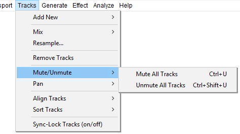

Tracks Menu: Mute/Unmute
The Mute/Unmute submenu enables you to mute or unmute all of the tracks in your project in one go, without having to use the buttons and in each track's Track Control Panel.
- Click, or hover, on any menu item in the image to read about that command. Skip the image
- 
If a track is muted, it cannot be heard in the project and is not exported from it. Note that how the mute buttons affect other tracks depends on your Solo button preference setting. Sometimes it can be as easy to change the mute setting on all tracks (or all but one) by using the mute or solo buttons.
Mute All Tracks Ctrl + U
Mutes all the audio tracks in the project, as if you had used the buttons from the Track Control Panel on each track.
Unmute All Tracks Ctrl + Shift + U
Unmutes all the audio tracks in the project, as if you had used the buttons from the Track Control Panel on each track.